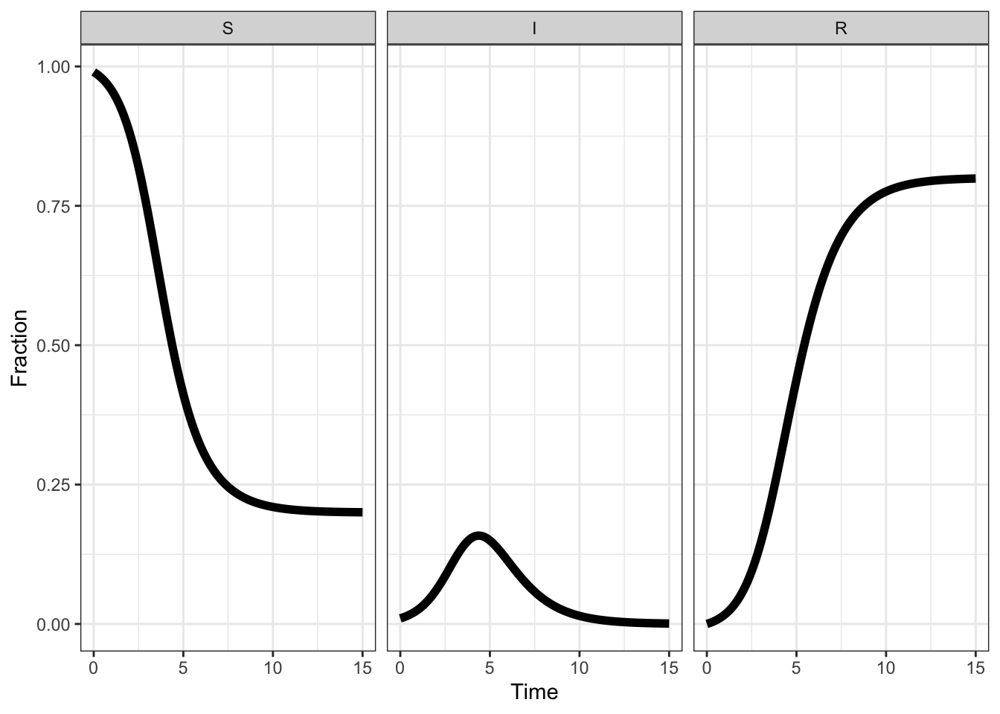

parameters <- c(beta = 2,
gamma = 1)
infected_initial <- 0.01
initial_condition <-
c(S = 1 - infected_initial,
I = infected_initial,
R = 0)
timepoints <- seq(0, 15, by = .1)Here I want to show some sample calculations using the SIR model (https://simple.wikipedia.org/wiki/SIR_model, https://en.wikipedia.org/wiki/Compartmental_models_in_epidemiology).
The SIR model is a simple ordinary differential equation model that describes the dynamics of an epidemic within a population. The model has three variables:
- \(S\) (= susceptible) quantifies the susceptible individuals
- \(I\) (= infectious) quantifies the individuals who are infected with the disease and can transmit the disease to susceptible individuals
- \(R\) (= recovered) quantifies the individuals who have recovered from the disease and can no longer be infected with the disease
The following equations describe the dynamics of the model: \[ \frac{dS}{dt} = -\frac{\beta I S}{N} \]
\[ \frac{dI}{dt} = \frac{\beta I S}{N} - \lambda I \]
\[ \frac{dR}{dt} = \lambda I \]
In the following, we solve the model equations for a random parameter set.
Furthermore, we fix \(N\) to \(1\) and set the initial conditions in a way that \(S + I + R = 1\) so that \(S\), \(R\) and \(I\) describe fractions of the population.
Then we define the model equations in R:
SIR_ODE = function(time, state, parameters){
with(as.list(c(state, parameters)), {
dS <- -beta * I * S
dI <- beta * I * S - gamma * I
dR <- gamma * I
list(c(dS, dI, dR))
})
}Finally, we use the function ode from the deSolve package to solve the ordinary differential equations:
library(deSolve)
result <- ode(y = initial_condition,
times = timepoints,
func = SIR_ODE,
parms = parameters)Now we use the builtin plot function from the deSolve-package to visualize the solution:
plot(result)
We can make some plots that are nicer looking in my taste with the lattice package. To rearrange the data from ‘wide’ to ‘long’ format (as needed for the lattice package), we use the tidyverse package.
library(lattice)
library(tidyverse)
theme_set(theme_bw())
# convert data from wide to long format:
long <- as.data.frame(result) %>%
pivot_longer(cols = c('S', 'I', 'R'))
# order factor levels so they appear in the plots in the desired order:
long$name = factor(long$name, levels = c('S', 'I', 'R'))
# plot all three variables in the same panel:
xyplot(value ~ time,
data = long,
group = name,
auto.key = list(space = 'right',
lines = TRUE,
points = FALSE),
type = 'l',
lwd = 3)# plot the variables in separate panels:
xyplot(value ~ time | name,
data = long,
type = 'l',
lwd = 3)Very similar plots can be made with the ggplot2 library:
long %>% ggplot(aes(time, value, colour = name)) +
geom_line(size = 2) +
labs(x = 'Time', y = 'Fraction', colour = 'Compartment')long %>% ggplot(aes(time, value)) +
geom_line(size = 2) +
facet_wrap(~ name) +
labs(x = 'Time', y = 'Fraction', colour = 'Compartment') 